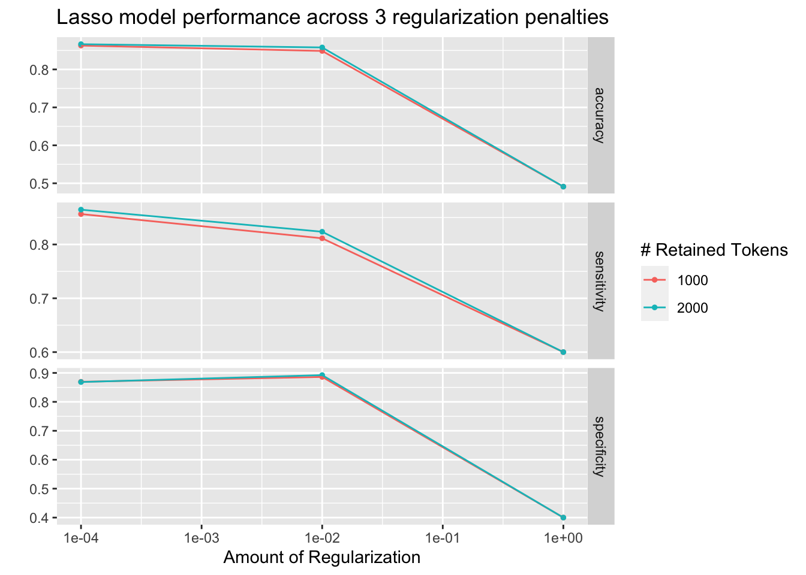
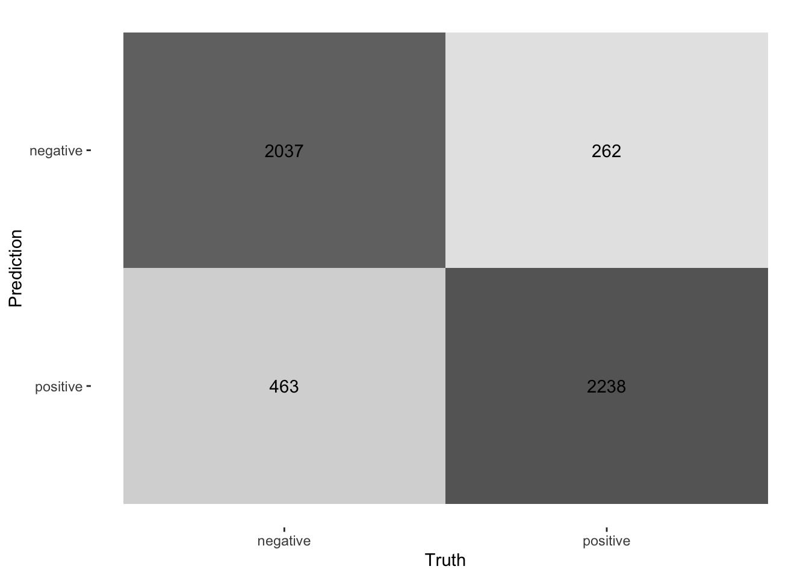

Chapter 6 Supervised Classification
In the following script, I will introduce you to the supervised classification of text. Supervised means that I will need to “show” the machine a data set that already contains the value or label I want to predict (the “dependent variable”) as well as all the variables that are used to predict the class/value (the independent variables or, in ML lingo, features). In the examples I will showcase, the features are the tokens that are contained in a document. Dependent variables are in my example sentiment.
Overall, the process of supervised classification using text in R encompasses the following steps:
- Split data into training and test set
- Pre-processing and featurization
- Training
- Evaluation and tuning (through cross-validation) (… repeat 2.-4. as often as necessary)
- Applying the model to the held-out test set
- Final evaluation
This is mirrored in the workflow() function from the workflow (Vaughan 2022) package. There, you define the pre-processing procedure (add_recipe() – created through the recipe() function from the recipes (Kuhn and Wickham 2022) and/or textrecipes (Hvitfeldt 2022) package(s)), the model specification with add_spec() – taking a model specification as created by the parsnip (Kuhn, Vaughan, and Hvitfeldt 2022) package.

Workflow overview
In the next part, other approaches such as Support Vector Machines (SVM), penalized logistic regression models (penalized here means, loosely speaking, that insignificant predictors which contribute little will be shrunk and ignored – as the text contains many tokens that might not contribute much, those models lend themselves nicely to such tasks), random forest models, or XGBoost will be introduced. Those approaches are not to be explained in-depth, third-party articles will be linked though, but their intuition and the particularities of their implementation will be described. Since I use the tidymodels (Kuhn and Wickham 2020) framework for implementation, trying out different approaches is straightforward. Also, the pre-processing differs, recipes and textrecipes facilitate this task decisively. Third, the evaluation of different classifiers will be described. Finally, the entire workflow will be demonstrated using the abortion Tweet data set.
6.1 Split data
The example for today’s session is the IMDb data set. First, I load a whole bunch of packages and the data set.
library(tidymodels)
library(textrecipes)
library(workflows)
library(discrim)
library(glmnet)
library(tidytext)
library(tidyverse)
imdb_data <- read_csv("data/imdb_reviews.csv")The first step is to divide the data into training and test sets using initial_split(). You need to make sure that the test and training set are fairly balanced which is achieved by using strata =. prop = refers to the proportion of rows that make it into the training set.
split <- initial_split(imdb_data, prop = 0.8, strata = sentiment)
imdb_train <- training(split)
imdb_test <- testing(split)
glimpse(imdb_train)## Rows: 20,000
## Columns: 2
## $ text <chr> "Once again Mr. Costner has dragged out a movie for far long…
## $ sentiment <chr> "negative", "negative", "negative", "negative", "negative", …imdb_train %>% count(sentiment)## # A tibble: 2 × 2
## sentiment n
## <chr> <int>
## 1 negative 10000
## 2 positive 100006.2 Pre-processing and featurization
In the tidymodels framework, pre-processing and featurization are performed through so-called recipes. For text data, so-called textrecipes are available.
6.2.1 textrecipes – basic example
In the initial call, the formula needs to be provided. In my example, I want to predict the sentiment (“positive” or “negative”) using the text in the review. Then, different steps for pre-processing are added. Similar to what you have learned in the prior chapters containing measures based on the bag of words assumption, the first step is usually tokenization, achieved through step_tokenize(). In the end, the features need to be quantified, either through step_tf(), for raw term frequencies, or step_tfidf(), for TF-IDF. In between, various pre-processing steps such as word normalization (i.e., stemming or lemmatization), and removal of rare or common words Hence, a recipe for a very basic model just using raw frequencies and the 1,000 most common words would look as follows:
imdb_basic_recipe <- recipe(sentiment ~ text, data = imdb_train) %>%
step_tokenize(text) %>% # tokenize text
step_tokenfilter(text, max_tokens = 1000) %>% # only retain 1000 most common words
# additional pre-processing steps can be added, see next chapter
step_tf(text) # final step: add term frequenciesIn case you want to know what the data set for the classification task looks like, you can prep() and finally bake() the recipe. Note that I need to specify the data set I want to pre-process in the recipe’s manner. In my case, I want to perform the operations on the data specified in the basic_recipe and, hence, need to specify new_data = NULL.
imdb_basic_recipe %>%
prep() %>%
bake(new_data = NULL)## # A tibble: 20,000 × 1,001
## sentiment tf_text_1 tf_text_10 tf_text_2 tf_text_20 tf_text_3 tf_text_30
## <fct> <dbl> <dbl> <dbl> <dbl> <dbl> <dbl>
## 1 negative 0 0 0 0 0 0
## 2 negative 0 1 0 0 0 0
## 3 negative 1 0 1 0 0 0
## 4 negative 0 0 0 0 1 0
## 5 negative 0 0 0 0 0 0
## 6 negative 0 0 0 0 0 0
## 7 negative 0 1 1 0 0 0
## 8 negative 0 0 0 0 0 0
## 9 negative 1 0 1 0 0 0
## 10 negative 0 0 0 0 0 0
## # … with 19,990 more rows, and 994 more variables: tf_text_4 <dbl>,
## # tf_text_5 <dbl>, tf_text_7 <dbl>, tf_text_8 <dbl>, tf_text_80 <dbl>,
## # tf_text_9 <dbl>, tf_text_a <dbl>, tf_text_able <dbl>, tf_text_about <dbl>,
## # tf_text_above <dbl>, tf_text_absolutely <dbl>, tf_text_across <dbl>,
## # tf_text_act <dbl>, tf_text_acted <dbl>, tf_text_acting <dbl>,
## # tf_text_action <dbl>, tf_text_actor <dbl>, tf_text_actors <dbl>,
## # tf_text_actress <dbl>, tf_text_actual <dbl>, tf_text_actually <dbl>, …6.2.2 textrecipes – further preprocessing steps
More steps exist. These always follow the same structure: their first two arguments are the recipe (which in practice does not matter, because they are generally used in a “pipeline”) and the variable that is affected (in my example “text” because it is the one to be modified). The rest of the arguments depends on the function. In the following, I will briefly list them and their most important arguments. [add link to vignette]
step_tokenfilter(): filters tokensmax_times =upper threshold for how often a term can appear (removes common words)min_times =lower threshold for how often a term can appear (removes rare words)max_tokens =maximum number of tokens to be retained; will only keep the ones that appear the most often- you should filter before using
step_tforstep_tfidfto limit the number of variables that are created
step_lemma(): allows you to extract the lemma- in case you want to use it, make sure you tokenize via
spacyr(by usingstep_tokenize(text, engine = "spacyr"))
- in case you want to use it, make sure you tokenize via
step_pos_filter(): adds the Part-of-speech tagsstep_stem(): stems tokenscustom_stem =specifies the stemming function. Defaults toSnowballC. Custom functions can be provided.options =can be used to provide arguments (stored as named elements of a list) to the stemming function. E.g.,step_stem(text, custom_stem = "SnowballC", options = list(language = "russian"))
step_stopwords(): removes stopwordssource =alternative stopword lists can be used; potential values are contained instopwords::stopwords_getsources()custom_stopword_source =provide your own stopword listlanguage =specify language of stop word list; potential values can be found instopwords::stopwords_getlanguages()
step_ngram(): takes into account order of terms, provides more contextnum_tokens =number of tokens in n-gram – defaults to 3 – trigramsmin_num_tokens =minimal number of tokens in n-gram –step_ngram(text, num_tokens = 3, min_num_tokens = 1)will return all uni-, bi-, and trigrams.
step_word_embeddings(): use pre-trained embeddings for wordsembeddings(): tibble of pre-trained embeddings
step_normalize(): performs unicode normalization as a preprocessing stepnormalization_form =which Unicode Normalization to use, overview instringi::stri_trans_nfc()
themis::step_upsample()takes care of unbalanced dependent variables (which need to be specified in the call)over_ratio =ratio of desired minority-to-minority frequencies
6.3 Model specification
Now that the data is ready, the model can be specified. The parsnip package is used for this. It contains a model specification, the type, and the engine. For Naïve Bayes, this would look like the following (note that you will need to install the relevant packages – here: discrim – before using them):
nb_spec <- naive_Bayes() %>% # the initial function, coming from the parsnip package
set_mode("classification") %>% # classification for discrete values, regression for continuous ones
set_engine("naivebayes") # needs to be installedOther model specifications you might deem relevant:
- Logistic regression
lr_spec <- logistic_reg() %>%
set_engine("glm") %>%
set_mode("classification")- Logistic regression (penalized with Lasso):
lasso_spec <- logistic_reg(mixture = 1) %>%
set_engine("glm") %>%
set_mode("classification") - SVM (here,
step_normalize(all_predictors())needs to be the last step in the recipe)
svm_spec <- svm_linear() %>%
set_mode("regression") %>% # can also be "classification"
set_engine("LiblineaR")- Random Forest (with 1000 decision trees):
rf_spec <- rand_forest(trees = 1000) %>%
set_engine("ranger") %>%
set_mode("regression") # can also be "classification"- xgBoost (with 20 decision trees):
xg_spec <- boost_tree(trees = 20) %>%
set_engine("xgboost") %>%
set_mode("regression") # can also be classification6.4 Model training – workflows
A workflow can be defined to train the model. It will contain the recipe, hence taking care of the pre-processing, and the model specification. In the end, it can be used to fit the model.
imdb_nb_wf <- workflow() %>%
add_recipe(imdb_basic_recipe) %>%
add_model(nb_spec)It can then be fit using fit().
imdb_nb_basic <- imdb_nb_wf %>% fit(data = imdb_train)6.5 Model evaluation
Now that a first model has been trained, its performance can be evaluated. In theory, I have a test set for this. However, the test set is precious and should only be used once I am sure that I have found a good model. Hence, for these intermediary tuning steps, I need to come up with another solution. So-called cross-validation lends itself nicely to this task. The rationale behind it is that chunks from the training set are used as test sets. So, in the case of 10-fold cross-validation, the test set is divided into 10 distinctive chunks of data. Then, 10 models are trained on the respective 9/10 of the training set that is not used for evaluation. Finally, each model is evaluated against the respective held-out “test set” and the performance metrics averaged.

Graph taken from https://scikit-learn.org/stable/modules/cross_validation.html/
First, the folds need to be determined. I set a seed in the beginning to ensure reproducibility.
library(tune)
set.seed(123)
imdb_folds <- vfold_cv(imdb_train)fit_resamples() trains models on the respective samples. (Note that for this to work, no model must have been fit to this workflow before. Hence, you either need to define a new workflow first or restart the session and skip the fit-line from before.)
imdb_nb_resampled <- fit_resamples(
imdb_nb_wf,
imdb_folds,
control = control_resamples(save_pred = TRUE),
metrics = metric_set(accuracy, recall, precision)
)collect_metrics() can be used to evaluate the results.
- Accuracy tells me the share of correct predictions overall
- Precision tells me the number of correct positive predictions
- Recall tells me how many actual positives are predicted properly
In all cases, values close to 1 are better.
collect_predictions() will give you the predicted values.
nb_rs_metrics <- collect_metrics(imdb_nb_resampled)
nb_rs_predictions <- collect_predictions(imdb_nb_resampled)This can also be used to create the confusion matrix by hand.
confusion_mat <- nb_rs_predictions %>%
group_by(id) %>%
mutate(confusion_class = case_when(.pred_class == "positive" & sentiment == "positive" ~ "TP",
.pred_class == "positive" & sentiment == "negative" ~ "FP",
.pred_class == "negative" & sentiment == "negative" ~ "TN",
.pred_class == "negative" & sentiment == "positive" ~ "FN")) %>%
count(confusion_class) %>%
ungroup() %>%
pivot_wider(names_from = confusion_class, values_from = n)Now you can go back and adapt the pre-processing recipe, fit a new model, or try a different classifier, and evaluate it against the same set of folds. Once you are satisfied, you can proceed to check the workflow on the held-out test data.
6.5.1 Hyperparameter tuning
Some models also require the tuning of hyperparameters (for instance, lasso regression). If I wanted to tune these values, I could do so using the tune package. There, the parameter that needs to be tuned gets a placeholder in the model specification. Through variation of the placeholder, the optimal solution can be empirically determined.
So, in the first example, I will try to determine a good penalty value for LASSO regression.
lasso_tune_spec <- logistic_reg(penalty = tune(), mixture = 1) %>%
set_mode("classification") %>%
set_engine("glmnet")I will also play with the numbers of tokens to be included:
imdb_tune_basic_recipe <- recipe(sentiment ~ text, data = imdb_train) %>%
step_tokenize(text) %>%
step_tokenfilter(text, max_tokens = tune()) %>%
step_tf(text)The dials (Kuhn and Frick 2022) package provides the handy grid_regular() function which chooses suitable values for certain parameters.
lambda_grid <- grid_regular(
penalty(range = c(-4, 0)),
max_tokens(range = c(1e3, 2e3)),
levels = c(penalty = 3, max_tokens = 2)
)Then, I need to define a new workflow, too.
lasso_tune_wf <- workflow() %>%
add_recipe(imdb_tune_basic_recipe) %>%
add_model(lasso_tune_spec)For the resampling, I can use tune_grid() which will use the workflow, a set of folds (I use the ones I created earlier), and a grid containing the different parameters.
set.seed(123)
tune_lasso_rs <- tune_grid(
lasso_tune_wf,
imdb_folds,
grid = lambda_grid,
metrics = metric_set(accuracy, sensitivity, specificity)
)
tune_lasso_rs %>% write_rds("data/tuned_lasso.rds")Again, I can access the resulting metrics using collect_metrics():
collect_metrics(tune_lasso_rs)## # A tibble: 18 × 8
## penalty max_tokens .metric .estimator mean n std_err .config
## <dbl> <int> <chr> <chr> <dbl> <int> <dbl> <chr>
## 1 0.0001 1000 accuracy binary 0.863 10 0.00202 Preprocessor1_…
## 2 0.0001 1000 sensitivity binary 0.856 10 0.00364 Preprocessor1_…
## 3 0.0001 1000 specificity binary 0.869 10 0.00330 Preprocessor1_…
## 4 0.01 1000 accuracy binary 0.849 10 0.00199 Preprocessor1_…
## 5 0.01 1000 sensitivity binary 0.811 10 0.00519 Preprocessor1_…
## 6 0.01 1000 specificity binary 0.886 10 0.00378 Preprocessor1_…
## 7 1 1000 accuracy binary 0.491 10 0.00240 Preprocessor1_…
## 8 1 1000 sensitivity binary 0.6 10 0.163 Preprocessor1_…
## 9 1 1000 specificity binary 0.4 10 0.163 Preprocessor1_…
## 10 0.0001 2000 accuracy binary 0.867 10 0.00224 Preprocessor2_…
## 11 0.0001 2000 sensitivity binary 0.865 10 0.00341 Preprocessor2_…
## 12 0.0001 2000 specificity binary 0.869 10 0.00319 Preprocessor2_…
## 13 0.01 2000 accuracy binary 0.858 10 0.00211 Preprocessor2_…
## 14 0.01 2000 sensitivity binary 0.824 10 0.00457 Preprocessor2_…
## 15 0.01 2000 specificity binary 0.892 10 0.00324 Preprocessor2_…
## 16 1 2000 accuracy binary 0.491 10 0.00240 Preprocessor2_…
## 17 1 2000 sensitivity binary 0.6 10 0.163 Preprocessor2_…
## 18 1 2000 specificity binary 0.4 10 0.163 Preprocessor2_…autoplot() can be used to visualize them:
autoplot(tune_lasso_rs) +
labs(
title = "Lasso model performance across 3 regularization penalties"
)
Also, I can use show_best() to look at the best result. Subsequently, select_best() allows me to choose it. In real life, I would choose the best trade-off between a model as simple and as good as possible. Using select_by_pct_loss(), I choose the one that performs still more or less on par with the best option (i.e., within 2 percent accuracy) but is considerably simpler. Finally, once I am satisfied with the outcome, I can finalize_workflow() and fit the final model to the test data.
show_best(tune_lasso_rs, "accuracy")## # A tibble: 5 × 8
## penalty max_tokens .metric .estimator mean n std_err .config
## <dbl> <int> <chr> <chr> <dbl> <int> <dbl> <chr>
## 1 0.0001 2000 accuracy binary 0.867 10 0.00224 Preprocessor2_Mode…
## 2 0.0001 1000 accuracy binary 0.863 10 0.00202 Preprocessor1_Mode…
## 3 0.01 2000 accuracy binary 0.858 10 0.00211 Preprocessor2_Mode…
## 4 0.01 1000 accuracy binary 0.849 10 0.00199 Preprocessor1_Mode…
## 5 1 1000 accuracy binary 0.491 10 0.00240 Preprocessor1_Mode…final_lasso_imdb <- finalize_workflow(lasso_tune_wf, select_by_pct_loss(tune_lasso_rs, metric = "accuracy", -penalty))6.6 Final fit
Now I can finally fit my model to the training data and predict on the test data. last_fit() is the way to go. It takes the workflow and the split (as defined by initial_split()) as parameters.
final_fitted <- last_fit(final_lasso_imdb, split)
collect_metrics(final_fitted)## # A tibble: 2 × 4
## .metric .estimator .estimate .config
## <chr> <chr> <dbl> <chr>
## 1 accuracy binary 0.855 Preprocessor1_Model1
## 2 roc_auc binary 0.930 Preprocessor1_Model1collect_predictions(final_fitted) %>%
conf_mat(truth = sentiment, estimate = .pred_class) %>%
autoplot(type = "heatmap")
6.7 Further links
- Check out the SMLTAR book
- More on tidymodels
- Basic descriptions of ML models
- More on prediction with text using tidymodels
6.8 Exercises
- “fake prediction challenge”: use the Twitter data provided on Moodle (“twitter-set”) and train a model that predicts partisanship. Play around with different parameters such as the inclusion of n-grams, stemming/lemmatization, different numbers of tokens, and tf-idf weighting. Use different classification models such as Random Forest, Naive Bayes, SVM (don’t forget to
step_normalize()!), and xgBoost. How well do your models perform on the test set? Form groups of 2 or 3, use seed “123” for training/test set splitting to ensure replicability and try to get the highest accuracy scores in cross-validation. Never touch the test set, as I will do this. The winner group gets a surprise gift in our last session.
tweets <- read_csv(tweets, "data/twitter-set.csv")
set.seed(123)
split_tweets <- initial_split(tweets, strata = party)
tweets_training <- training(split_tweets)
#tweets_testing <- testing(split_tweets)- Do the same task as before, but now only take into account tweets that deal with abortion (the ones that are
TRUEin the columnabortion). You will have to split the set yourself. How well does your adapted model perform now? What does this mean?